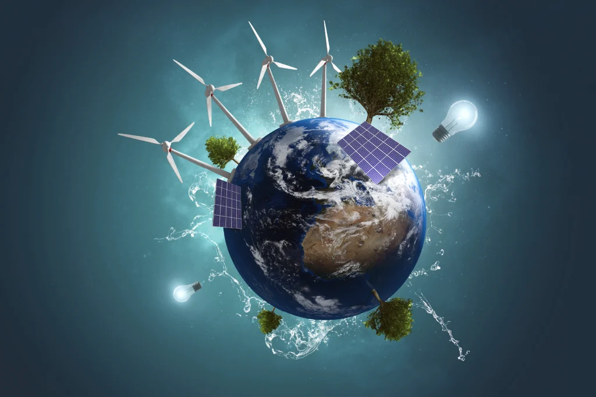
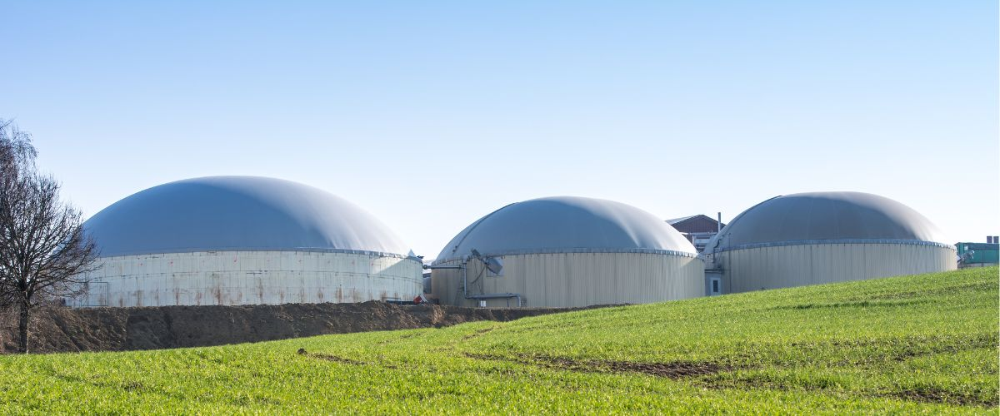
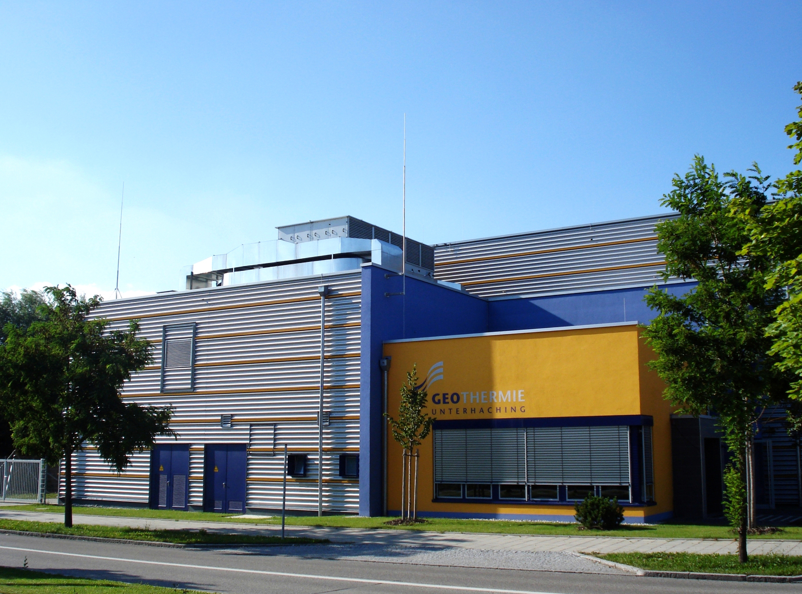
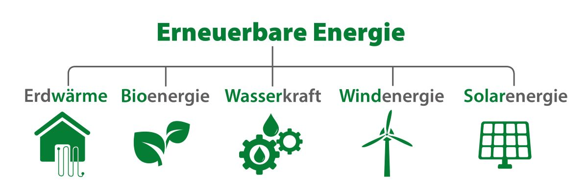

Einleitung
Erneuerbare Energien sind wichtig für eine klimafreundliche Energieversorgung. Die wichtigsten Formen sind Solarenergie, Windenergie, Wasserkraft, Biomasse und Geothermie. Sie unterscheiden sich in Herstellung, Kosten, Finanzierung und Effizienz.

Solarenergie
Photovoltaikanlagen wandeln Sonnenlicht in Strom um. Die Herstellung der Solarmodule ist energieaufwendig, die Betriebskosten sind jedoch sehr gering. Solaranlagen werden häufig von Privatpersonen finanziert. Sie sind günstig, aber von Wetter und Tageszeit abhängig.
Vorteile: Günstig, einfache Installation, niedrige Betriebskosten
Nachteile: Stromproduktion nur bei Sonneneinstrahlung

Windenergie
Windkraftanlagen bestehen aus großen Türmen und Rotorblättern. Die Baukosten sind hoch, dafür gehört Windstrom zu den günstigsten Energiequellen. Die Stromerzeugung hängt von der Windstärke ab.
Vorteile: Sehr günstiger Strom, hohe Erträge
Nachteile: Wetterabhängig, hoher Platzbedarf

Wasserkraft
Wasserkraftwerke nutzen fließendes oder gestautes Wasser zur Stromerzeugung. Sie haben hohe Baukosten, aber eine lange Lebensdauer und einen sehr hohen Wirkungsgrad.
Vorteile: Sehr effizient, zuverlässige Stromversorgung
Nachteile: Hohe Baukosten, Eingriffe in die Natur

Biomasse
Biomasse nutzt Pflanzenreste, Holz oder Biogas zur Energiegewinnung. Im Gegensatz zu Solar- und Windenergie entstehen laufende Kosten für den Brennstoff.
Vorteile: Wetterunabhängig, gut steuerbar
Nachteile: Brennstoffkosten, Flächenbedarf

Geothermie
Geothermie nutzt die Wärme aus dem Erdinneren. Die Erschließung ist teuer, aber die Energie steht dauerhaft zur Verfügung.
Vorteile: Kontinuierliche Energieversorgung, wetterunabhängig
Nachteile: Hohe Investitionskosten, nur an geeigneten Standorten möglich

Fazit
Wind- und Solarenergie sind heute die günstigsten erneuerbaren Energiequellen. Wasserkraft ist am effizientesten, während Biomasse und Geothermie zuverlässig Strom liefern können. Für eine sichere und nachhaltige Energieversorgung ist die Kombination verschiedener erneuerbarer Energien am sinnvollsten.
